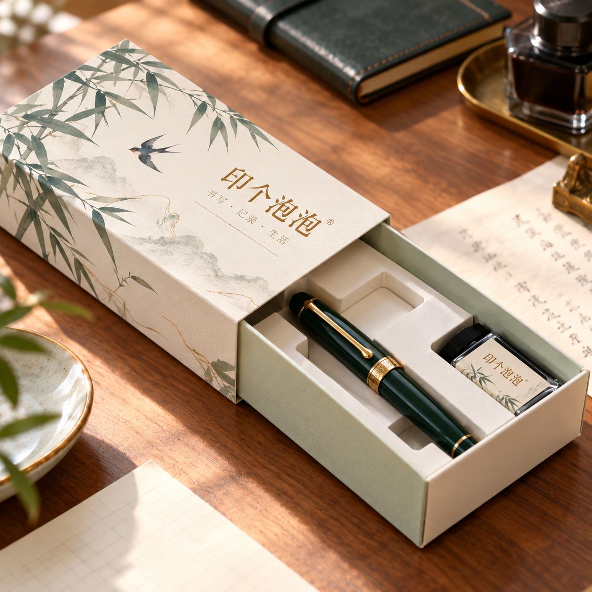

公司新闻
平台选型对照：同样叫抽屉盒，卡纸与精装怎么分？
2026-10-13 · 印个泡泡
先核对品类和结构要求，再把抽拉外观与材料方案放在一起讨论。
看到“抽屉盒”三个字，容易把所有抽拉式外观当成同一种产品。印个泡泡在线品类页中，卡纸盒类与精装礼盒类分别有抽屉式产品入口。选型时应先确认对应分类，而不只记住抽拉的开合方式。

图：平台维护方提供的设计场景素材，仅作外观与用途参考，不是客户出货照片或生产性能证明。
| 选型入口 | 先要确认的内容 | 图片不能直接回答的内容 |
|---|---|---|
| 卡纸盒类抽屉式产品 | 当前材料、折叠装配方式与图稿范围 | 实际装载、工艺可行性与确认尺寸 |
| 精装礼盒类抽屉式产品 | 当前结构方案、装配与开合要求 | 配套内托、材料规格及实际效果 |
这里比较的是平台分类与沟通方向，不给两类产品设定固定价格、厚度或品质等级。
把“喜欢抽拉”拆成两个需求
第一是使用动作：希望怎样抽出、打开后如何取物。第二是包装方案：具体内容物、内衬、展示要求与材料方向。动作相似，不代表两份需求可以共用同一结构文件。
挑中入口后，把对应产品网址与需求一起交生产方核对。若更换材料或分类，不要只替换图片，却沿用未经确认的尺寸或图稿。
查看在线品类页。本文为平台服务使用说明，入口核对于2026-10-13，不是新品发布公告。
为你的产品，找到适合的包装。
选包装，获取报价 →